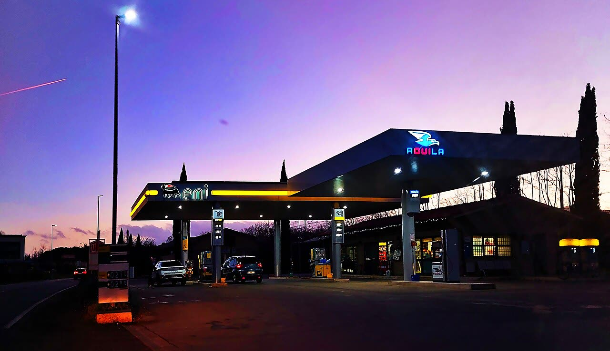

Foto: Anna.Massini, CC BY 4.0Gasolio, finisce lo sconto: da domenica 4,88 centesimi di tasse in più al litro
Non è una stangata, il guaio è il metodo: 16 sconti a scatti da marzo, oltre 2 miliardi spesi, e l'ultimo si è visto poco alla pompa. L'IVA dei rincari va restituita con una regola fissa.